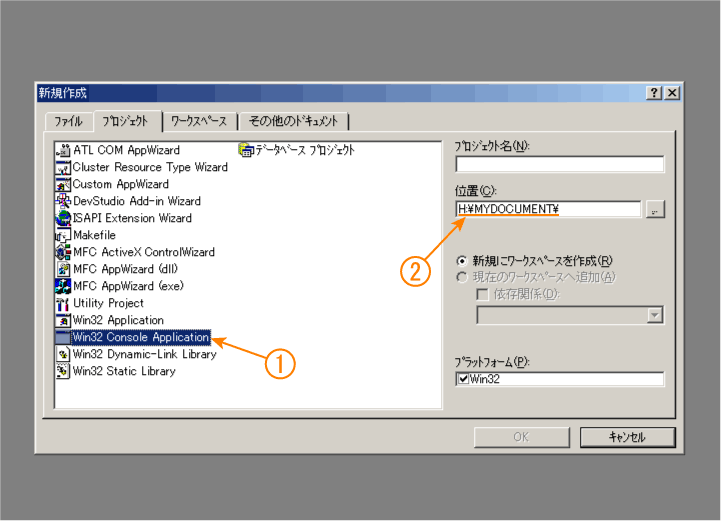
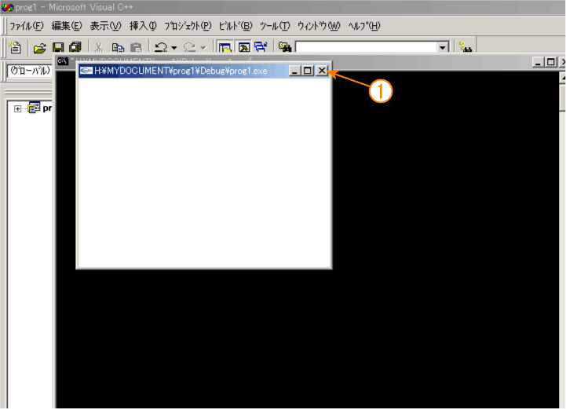

Windows の「スタート」ボタンをクリックし、「プログラム」→「Microsoft Visual Studio」→「Microsoft Visual C++ 6.0」の順にたどってください。
起動すると次のようなウィンドウが現れます。「閉じる」をクリックしてください。
メニューバーの「ファイル」から「新規作成」を選んでください。
「プロジェクト」のタブで Win32 Console Application を選んだ後、「位置」の欄に “H:\MYDOCUMENT\” を設定してください。

次にプロジェクト名（作成するプログラムの名前）を指定します。ここでは prog1 とします。プロジェクト名を設定すると、その名前が「位置」の欄に追加されます。設定が終わったら「OK」をクリックしてください。
次の画面では、そのまま何もしないで（「空のプロジェクト」を選んだ状態で）「終了」をクリックしてください。
次の画面が現れたら「OK」をクリックしてください。
これでプロジェクトが作成されました。
メニューバーの「プロジェクト」から「プロジェクトへ追加」→「新規作成」とたどってください。
「ファイル」のタブの「C++ソースファイル」を選び、「ファイル名」の欄にソースファイル名を設定してください。ここではファイル名を main.c とします。拡張子を .c とすることで、C のプログラムの作成になります。設定が終わったら「OK」をクリックしてください。
main.c のウィンドウが現れますから、ここにソースプログラムを書き込みます。

ソースプログラムが作成できたら、ビルド（コンパイル＆リンク）して実行プログラムを作成します。メニューバーの「ビルド」から「ビルド」を選ぶか、ファンクションキーの F7 をタイプしてください。
ウィンドウの下部にビルドの途中経過が表示されます。エラーがあると実行プログラムは作成されませんので、このウィンドウをスクロールして、エラーメッセージを見てみてください。表示されているエラーメッセージをダブルクリックすると、エラーの発生個所に移動できます。
エラーがなければ実行プログラムが作成されていますので、メニューバーの「ビルド」から「実行」を選ぶか、Ctrl キーを押しながらファンクションキーの F5 をタイプしてください。プログラムの実行が開始されます。

先に黒いコンソールウィンドウが開き、続けて作成したプログラムのウィンドウが開きます。プログラム中で printf() などにより表示したメッセージは、コンソールウィンドウに表示されます。プログラムを終了するには、プログラムのウィンドウの右上のクローズボックスをクリックしてください。
なお、プログラムのウィンドウを閉じたあと、コンソールウィンドウに "Press any key to continue" というメッセージが現れますので、コンソールウィンドウを選択して何かキーをタイプしてください。Ctrl キーを押さずにファンクションキーの F5 をタイプした場合は、このメッセージは表示されません（コンソールウィンドウはすぐに閉じてしまいます）。
メニューバーの「ファイル」メニューから「すべて保存」を選んでファイルを保存したあと、もう一度同じメニューから「アプリケーションの終了」を選んでください。なお、次回このプロジェクトを開く場合は、このメニューの「ワークスペースを開く」を選ぶか、「最近使ったワークスペース」のところに現れる一覧から選んでください。